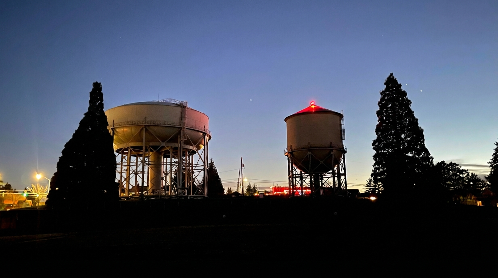

×
Photography Analysis & Enhancement

Original Score
After Editing
A well-framed blue hour composition with pleasing symmetry. The edit should focus on cleaning up sensor noise in the sky and balancing the exposure to show just enough detail in the industrial structures without losing the moody, low-light atmosphere.
The image has strong industrial shapes and a pleasing dusk sky, but the main structures read a bit too dark and the sky shows some noise. Targeted shadow lifting on the towers, careful highlight control around lights, and masked noise reduction will improve clarity while preserving the intended moody silhouette feel.
Analysis failed: Error code: 400 - {'type': 'error', 'error': {'type': 'invalid_request_error', 'message': 'messages.0.content.0.image.source.base64.data: Image does not match the provided media type image/jpeg'}, 'request_id': 'req_011CXm4V28cpbp7kqbkqthhM'}
This is a moody blue hour shot with nice symmetry. The primary editing goal should be cleaning up sensor noise in the sky and refining the geometry of the structures while embracing the high-contrast silhouette aesthetic.
Strong blue-hour scene with pleasing silhouettes and a compelling industrial subject. The main gains will come from selectively opening the towers for detail while keeping the foreground dark, then cleaning up sky noise and controlling light bloom for a more polished finish.
This atmospheric industrial landscape has strong compositional elements with nice symmetry and twilight ambiance. The primary issue is underexposed foreground that creates excessive darkness, and slightly muted sky colors that don't fully capture the twilight drama. Strategic shadow lifting and color enhancement will elevate this while maintaining the moody, industrial character that makes the image compelling.